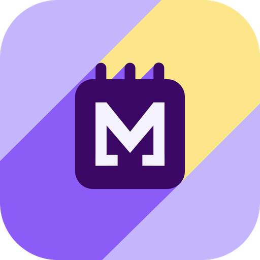

Un calendario Android che si adatta a te.
My Calendar: non un calendario uguale per tutti, ma uno che costruisci intorno alla tua personalità e a come lavori, ti alleni, studi o ti organizzi. Sei tu a creare la risposta alle tue esigenze.
Privacy per costruzione. MyCalendar non ha un server: non esiste un posto dove i tuoi dati possano arrivare a noi. I tuoi eventi stanno nel tuo Google Calendar e la configurazione dell'app nella cartella privata della tua Google Drive, che nessun'altra applicazione può leggere.
Nessuna pubblicità, nessun tracciamento. L'app non contiene SDK pubblicitari né strumenti di profilazione. Il dettaglio, categoria per categoria, è nell'informativa sulla privacy.
Non perdi i tuoi dati. Vivendo nel tuo account Google, il calendario che hai costruito si ritrova su qualunque dispositivo, in qualunque momento, con un accesso.
Scrivi o dì cosa devi fare, in linguaggio naturale, e l'app lo trasforma in eventi.
Funziona subito, senza scaricare nulla. L'interpretazione la fa un parser incluso nell'app, che riconosce date, orari, durate e i tuoi tipi di evento — e che da una sola frase può ricavare più eventi insieme.
L'intelligenza artificiale non è obbligatoria. Se vuoi, puoi attivare un modello linguistico che capisce frasi più libere e meno prevedibili; se non lo attivi, o se per qualunque motivo non risponde, l'inserimento continua a funzionare col parser incluso. L'inserimento di più eventi da una sola frase è una funzione del parser incluso.
In entrambi i casi l'interpretazione avviene sul telefono: la frase non viene inviata a nessun servizio di intelligenza artificiale. Per il dettaglio su cosa fa il microfono quando detti, vedi il punto 3.6 dell'informativa.
È la funzione pensata per chi ha un ciclo che si ripete. Con le combinazioni descrivi la tua rotazione come una sequenza di giorni — per esempio mattina, mattina, pomeriggio, notte, riposo, riposo — dove ogni passo è un tuo tipo di evento col suo orario, e i giorni di riposo fanno parte dello schema come passi vuoti.
Poi la inserisci in blocco: scegli il giorno da cui partire e l'app distribuisce la sequenza un passo al giorno. Puoi farla ripetere un numero di volte che decidi, fino a una data, oppure senza fine. Mesi di turni in un'operazione, non un evento alla volta.
Si aggiungono le concatenazioni, che sono una cosa diversa e complementare: un tipo di evento può generare da sé ciò che ne deriva — altri eventi o promemoria — con la tempificazione che hai stabilito, relativa all'evento di partenza oppure a giorno e ora fissi.
Colori, forme, ombre, immagini di sfondo: l'aspetto si cambia in profondità, non fra tre preimpostazioni. Serve a rendere MyCalendar la tua app, anche a guardarla.
Cinque widget per la schermata home, da combinare come preferisci:
| Widget | Cosa mostra |
|---|---|
| Prossimi eventi | l'agenda di ciò che ti aspetta |
| Vista mensile | il mese intero a colpo d'occhio |
| Vista settimanale | la settimana in griglia |
| Programma settimanale | la settimana come elenco di impegni |
| Contatori | i tuoi conteggi sempre sotto gli occhi |
C'è anche un accesso rapido all'inserimento naturale direttamente dalla schermata home, senza aprire l'app.
Il lavoro che fai per costruire il tuo calendario non è legato al dispositivo su cui l'hai fatto. I tuoi dati non stanno dentro l'app: stanno nel tuo account Google — gli eventi in Google Calendar, la configurazione in una cartella privata della tua Google Drive.
Quindi puoi cambiare telefono, reinstallare l'app o ripartire da zero in qualunque momento e su qualunque dispositivo: accedi col tuo account Google e torna da sé tutto quello che avevi costruito. I tipi di evento con i loro contatori, le combinazioni, i temi, la lingua, i memo e le liste, i messaggi programmati, gli account collegati e le tue preferenze. Non c'è niente da esportare prima e niente da reimportare dopo: il salvataggio avviene da sé, mentre usi l'app.
L'unica cosa che l'app non conserva fuori dal telefono sono le credenziali di accesso — restano nell'archivio cifrato del dispositivo e non vengono mai caricate altrove. Dopo una reinstallazione fai di nuovo l'accesso ai tuoi account: è un passaggio di pochi secondi, ed è il prezzo di non avere le tue chiavi parcheggiate su Internet.
La cartella su Drive è riservata all'app: non vede, non tocca e non chiede accesso al resto dei tuoi file, e nessun'altra applicazione può leggerla. Il dettaglio completo, categoria per categoria, è nell'informativa sulla privacy.
Per domande, problemi o richieste sui tuoi dati, scrivi a aeryha.support@gmail.com.